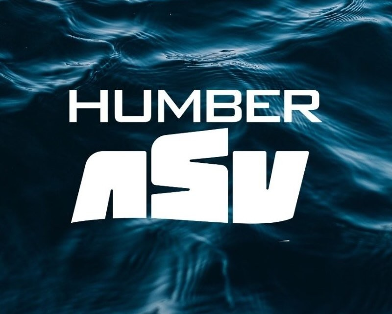
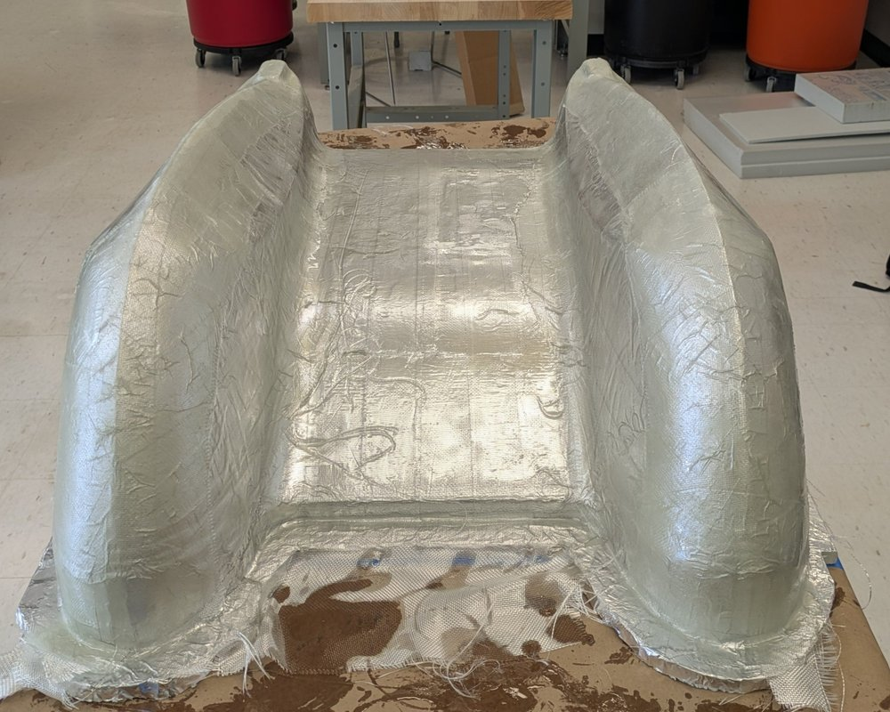
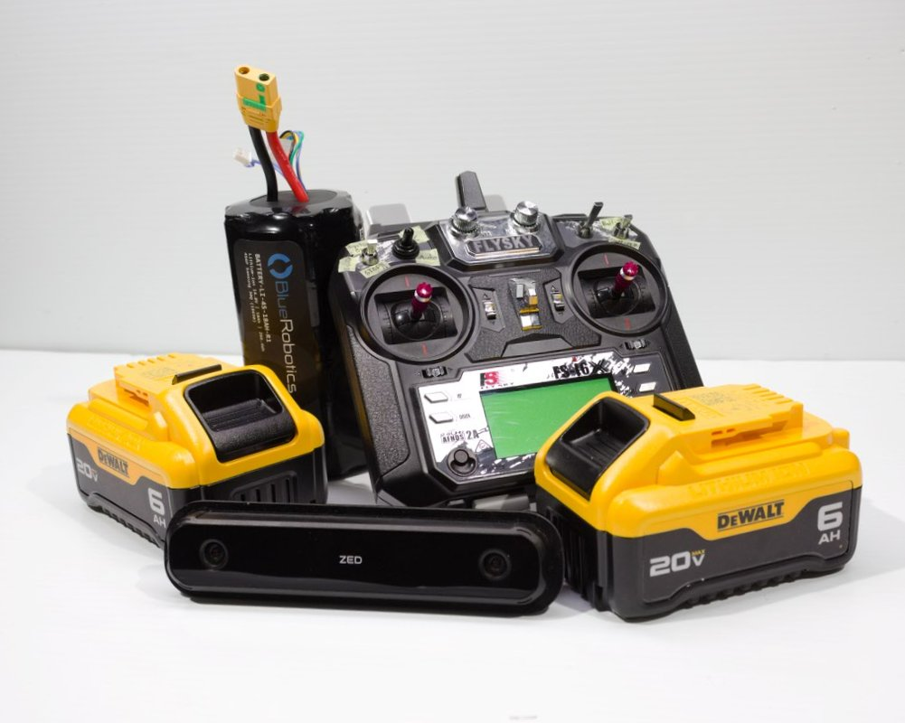
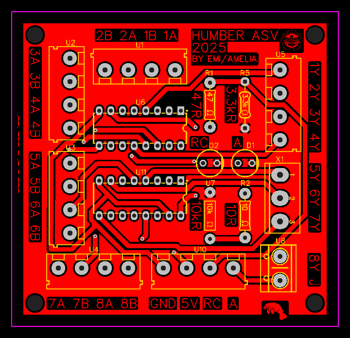
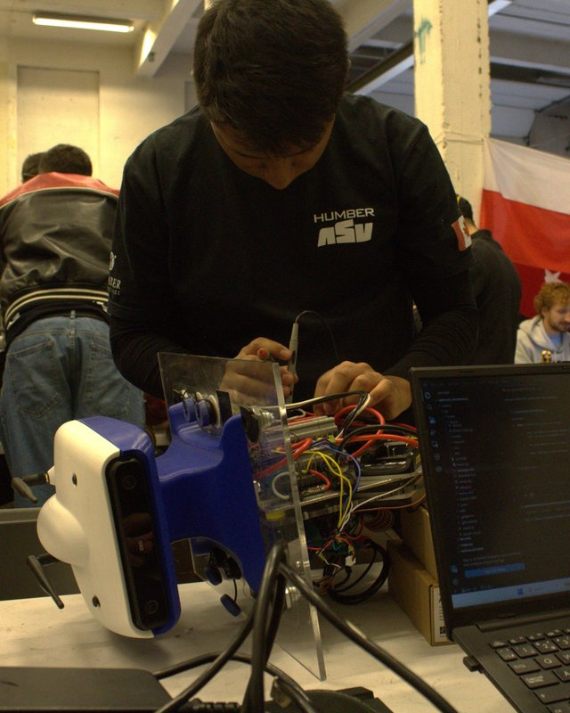
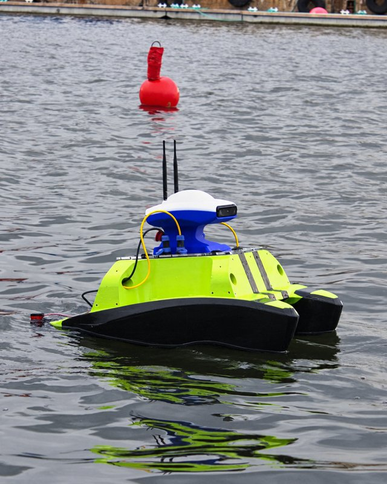
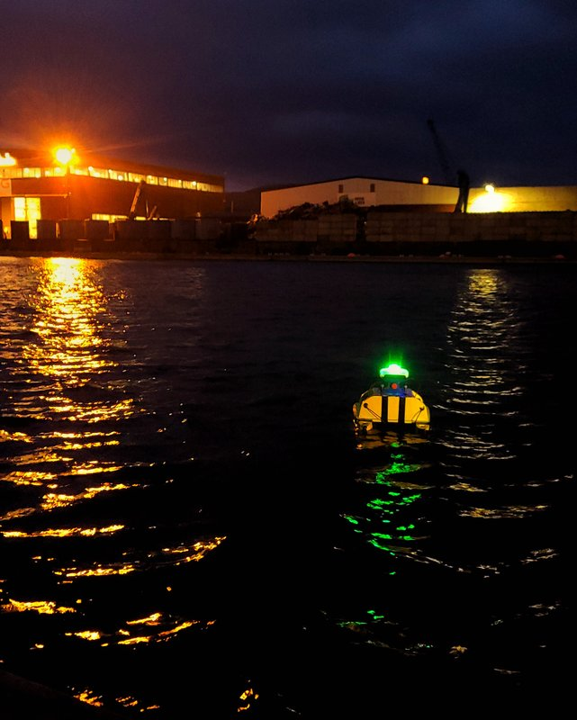
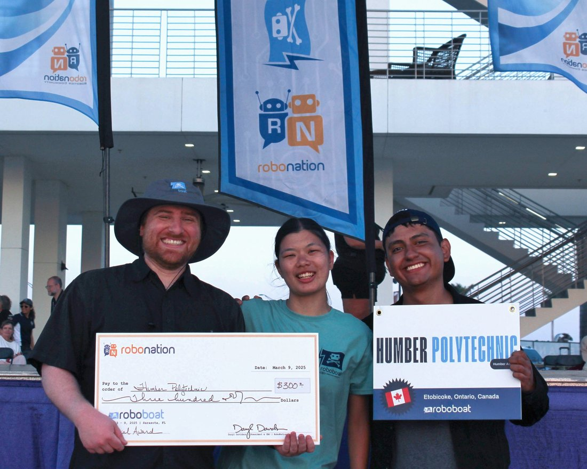
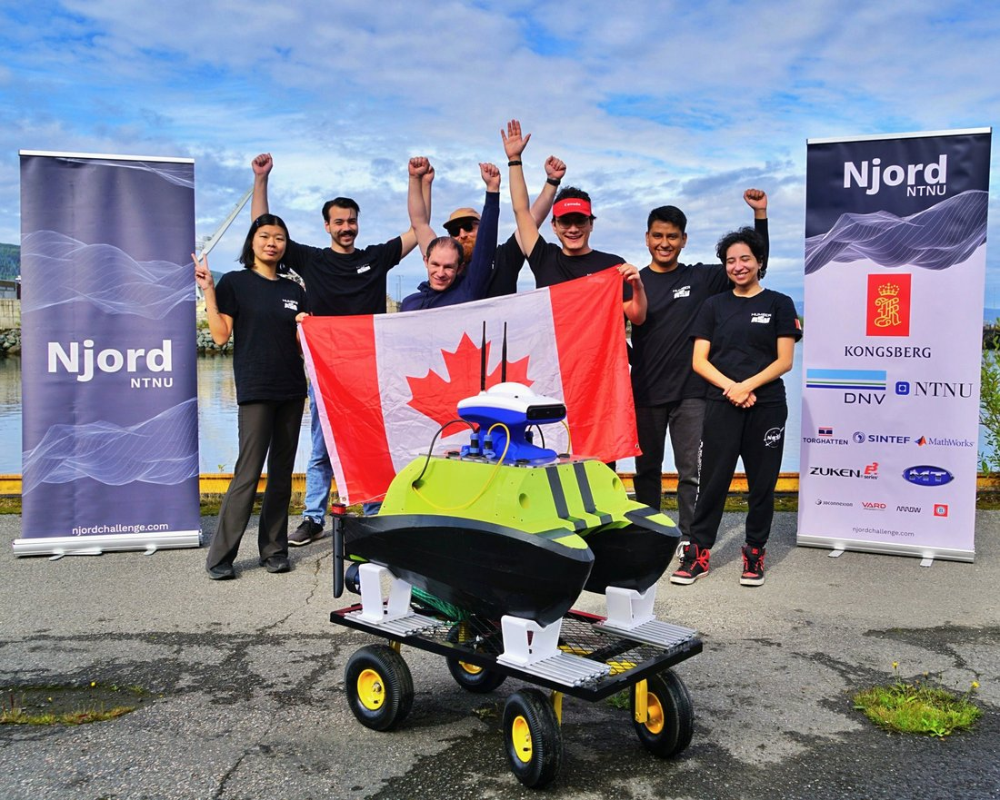
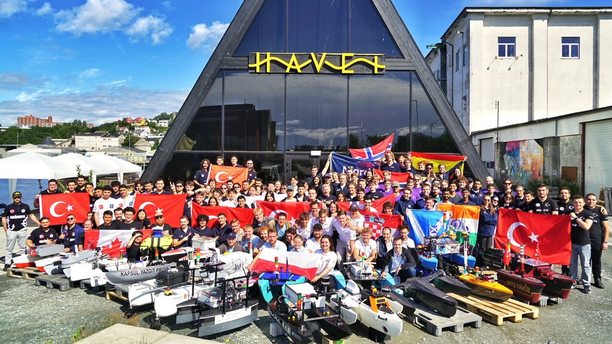

I led the electrical sub-team of Humber ASV, the autonomous boat design team at Humber Polytechnic. As electrical lead, I developed the full electrical system from scratch, and I also contributed to the mechanical and software teams.
I gained ample experience in 3D printing, prototyping, fiberglass and carbon fiber composites, waterproofing, building a ROS environment, Gazebo simulation, processing point clouds from depth cameras, and developing path-finding algorithms.
A Critical Failure Mode we identified was electromagnetic interference (EMI) coming from high-current carrying wires, particularly the brushless DC motors and their electronic speed controllers (ESCs). This could corrupt sensor data and actuator commands.
Because the enclosure made it hard to physically separate the power and data wires, I mounted the components on an aluminum plate, since its electrical conductivity makes it ideal for redirecting high-frequency magnetic fields. This plate also doubles as a heat sink that regulates the ESCs’ temperature.
Another Critical Failure Mode was water ingress. If any water entered the electronics cavity, the components could be damaged.
We suspended the electronics assembly from above, avoiding contact with the bottom of the cavity and keeping it safe in case of a breach. This also made it easier to remove from the boat and service on a table.
Another Critical Failure Mode was battery depletion. If the battery were depleted, the boat would be stranded in the middle of the water.
We used 20 V batteries to deliver full power to the propellers and a 14.8 V battery for the control electronics. I developed a battery switching system that switches to the secondary battery in an emergency, which also enables longer run times.







We competed in RoboBoat 2025 in the U.S. and the Njord Challenge 2026 in Norway, where we even earned awards.
Through this team I gained invaluable experience solving real-world challenges while testing in the field, but more importantly, I learned how to be a better leader and team player. It has been a really rewarding experience.


